搭建环境
安装Linux虚拟机
安装docker
- mysql
- redis
docker run -p 3306:3306 --name mysql \ -v /mydata/mysql/log:/var/log/mysql \ -v /mydata/mysql/data:/var/lib/mysql \ -v /mydata/mysql/conf:/etc/mysql \ -e MYSQL_ROOT_PASSWORD=root \ -d mysql:5.7 # 安装完mysql之后需要做如下配置 vim /mydata/mysql/conf/my.cnf [client] default-character-set=utf8 [mysql] default-character-set=utf8 [mysqld] init_connect='SET collation_connection = utf8_unicode_ci' init_connect='SET NAMES utf8' character-set-server=utf8 collation-server=utf8_unicode_ci skip-character-set-client-handshake skip-name-resolve # 注意 -v /mydata/redis/conf/redis.conf:/etc/redis/redis.conf \ # 如果宿主机里面没有redis.conf文件，那么上面那个命令docker会认为redis.conf是一个文件夹 mkdir -p /mydata/redis/conf touch /mydata/redis/conf/redis.conf # redis-server /etc/redis/redis.conf：每次启动容器都会读取 /etc/redis/redis.conf 这个配置文件 docker run -p 6379:6379 --name redis -v /mydata/redis/data:/data \ -v /mydata/redis/conf/redis.conf:/etc/redis/redis.conf \ -d redis redis-server /etc/redis/redis.conf # 修改配置文件，让redis持久化，redis默认是存在内存里的 # 加入配置 appendonly yes vim /mydata/redis/conf/redis.confjava，Maven，git，VScode以及相关插件
搭建项目
创建项目
在git上新建一个项目
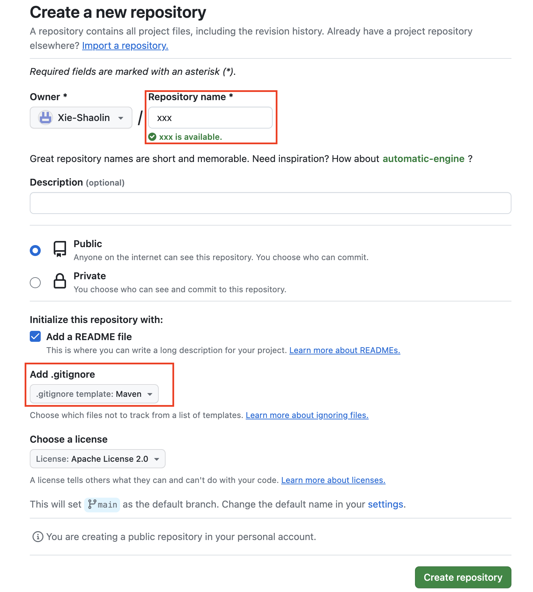新建项目时
创建module
通过Spring Initializr创建
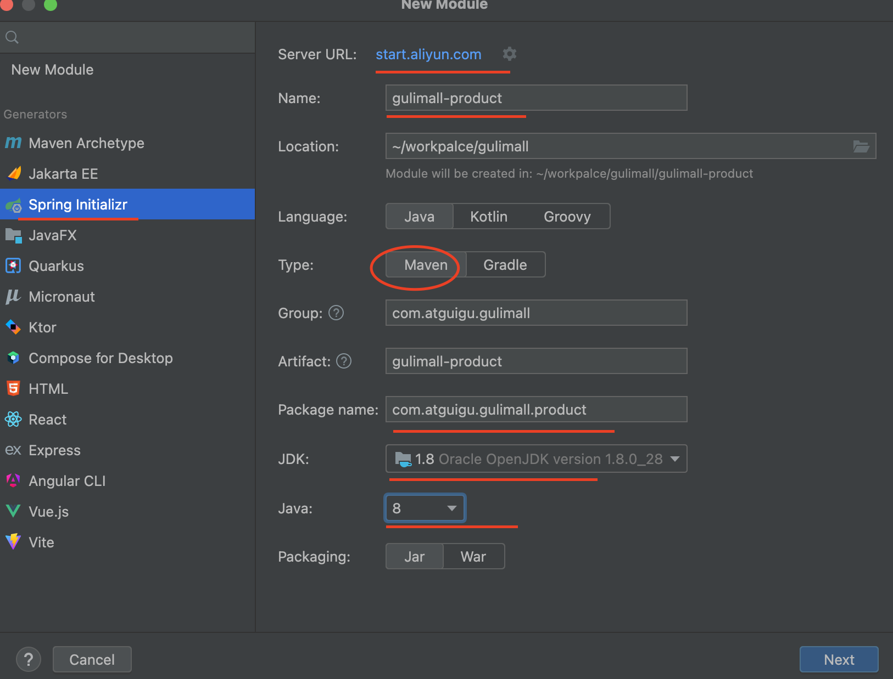Idea 2023 不支持Java 8 的问题：
我们只知道IDEA页面创建Spring项目，其实是访问spring initializr去创建项目。故我们可以通过阿里云国服去间接创建Spring项目。将https://start.spring.io/或者http://start.springboot.io/替换为 https://start.aliyun.com/
选择Spring Web 和 Spring Openfeign
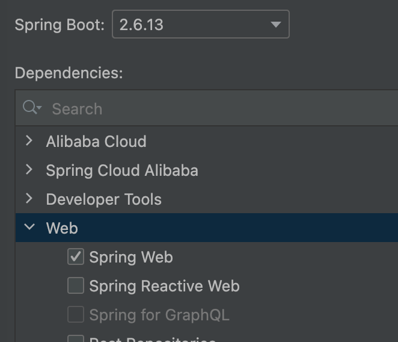 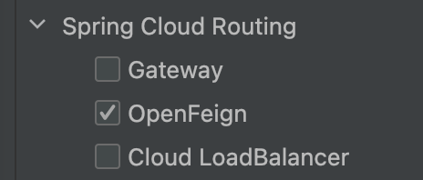创建module后出现问题：idea右边栏的maven不见了
首先打开项目的pom文件；
鼠标右键选择 Add as Maven Project
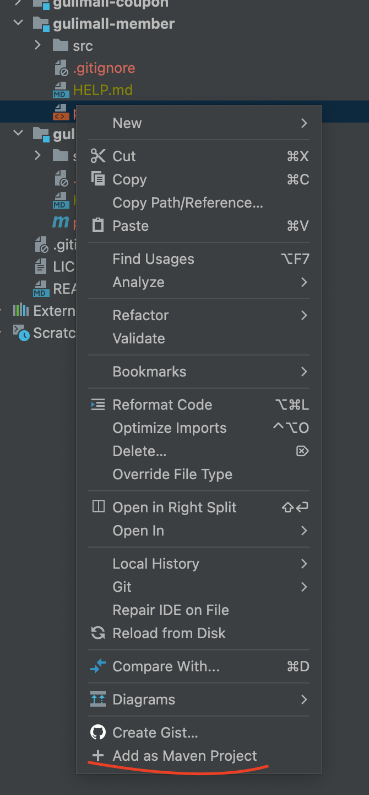
接着安装上面步骤依次创建其他几个模块
将gulimall设为父工程
给gulimall添加pom文件，内容如下
<?xml version="1.0" encoding="UTF-8"?> <project xmlns="http://maven.apache.org/POM/4.0.0" xmlns:xsi="http://www.w3.org/2001/XMLSchema-instance" xsi:schemaLocation="http://maven.apache.org/POM/4.0.0 https://maven.apache.org/xsd/maven-4.0.0.xsd"> <modelVersion>4.0.0</modelVersion> <groupId>com.atguigu.gulimall</groupId> <artifactId>gulimall</artifactId> <version>0.0.1-SNAPSHOT</version> <name>gulimall</name> <description>聚合服务</description> <packaging>pom</packaging> <modules> <module>gulimall-coupon</module> <module>gulimall-member</module> <module>gulimall-order</module> <module>gulimall-product</module> <module>gulimall-ware</module> </modules> </project>点击 Add as Maven Project，就会发现这是一个父工程
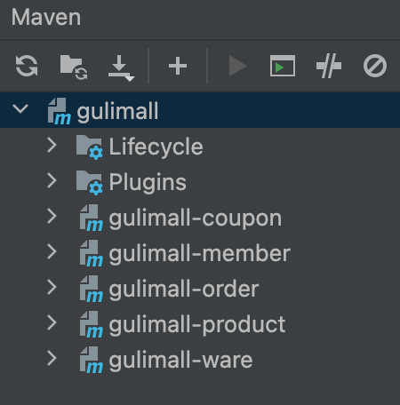
修改gitignore文件，忽略掉一些垃圾文件
target/ pom.xml.tag pom.xml.releaseBackup pom.xml.versionsBackup pom.xml.next release.properties dependency-reduced-pom.xml buildNumber.properties .mvn/timing.properties # https://github.com/takari/maven-wrapper#usage-without-binary-jar .mvn/wrapper/maven-wrapper.jar # Eclipse m2e generated files # Eclipse Core .project # JDT-specific (Eclipse Java Development Tools) .classpath ########### 以下我添加的############ **/mvnw #忽略所有mvnw文件 **/mvnw.cmd #忽略所有 mvnw.cmd **/.mvn #忽略所有.mvn文件 **/target/ #忽略所有target目录下的文件 **/.gitignore # 忽略所有.gitignore的文件，因为父工程已经配置了 .idea #忽略.idea这个文件夹的文件 **/test/ # 忽略所有test目录下的文件Idea 的git 的local change 不见了，作如下配置即可再次看见
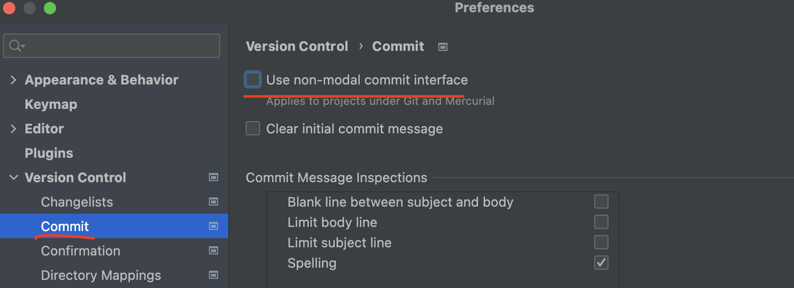 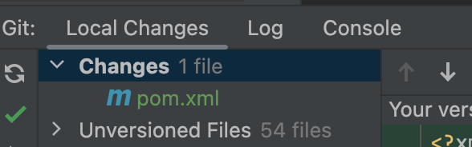把所有文件添加到版本控制，然后提交git
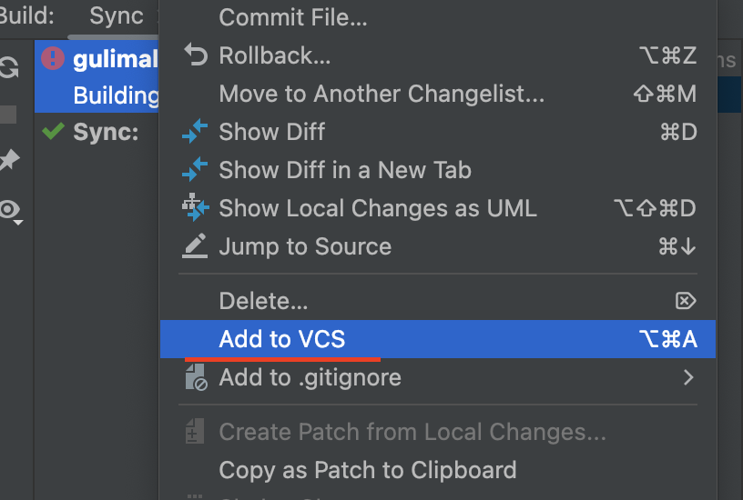
数据库初始化
执行课程准备的sql 文件：创建数据库，选择utf8mb4的字符集
安装renren-fast
去renren-fast的仓库克隆代码
git clone https://gitee.com/renrenio/renren-fast.git
任何删除.git文件夹，直接粘到Java项目中
接着创建数据库，脚本在renren-fast/db/mysql.sql
修改renren-fast/src/main/resources/application-dev.yml文件，配置数据库
spring:
datasource:
type: com.alibaba.druid.pool.DruidDataSource
druid:
driver-class-name: com.mysql.cj.jdbc.Driver
url: jdbc:mysql://数据库IP:端口/数据库名?useUnicode=true&characterEncoding=UTF-8&serverTimezone=Asia/Shanghai
username: root
password: root
将renren-fast引入父工程gulimall
<modules>
<module>gulimall-coupon</module>
<module>gulimall-member</module>
<module>gulimall-order</module>
<module>gulimall-product</module>
<module>gulimall-ware</module>
<module>renren-fast</module>
</modules>
遇到的问题
'parent.relativePath' of POM io.renren:renren-fast:3.0.0 (/Users/xieshaolin/workpalce/gulimall/renren-fast/pom.xml) points at com.atguigu.gulimall:gulimall instead of org.springframework.boot:spring-boot-starter-parent, please verify your project structure
原因：在renren-fast项目中，已经指定了父工程spring-boot-starter-parent，而我在gulimall项目中又为renren-fast指定了父工程<module>renren-fast</module>>。导致冲突。
<parent>
<groupId>org.springframework.boot</groupId>
<artifactId>spring-boot-starter-parent</artifactId>
<version>2.6.6</version>
</parent>
于是我把workpalce/gulimall/renren-fast/pom.xml文件里的<parent>标签注释掉。
并且声明在该pom文件里，声明gulimall才是父工程
<parent>
<groupId>com.atguigu.gulimall</groupId>
<artifactId>gulimall</artifactId>
<version>0.0.1-SNAPSHOT</version> <!-- 确保这里的版本与父工程的版本一致 -->
</parent>
但是又报如下错误：
org.springframework.boot:spring-boot-starter-aop:jar:unknown was not found in https://maven.aliyun.com/repository/public/ during a previous attempt. This failure was cached in the local repository and resolution is not reattempted until the update interval of public has elapsed or updates are forced 我
总之是依赖没找到。因为原来spring-boot-starter-parent的父工程，还制定了所用依赖的相关版本<version>2.6.6</version>。
于是我在gulimall的父工程有添加了依赖管理
<properties>
<!-- 定义 Spring Boot 版本 -->
<spring-boot.version>2.6.6</spring-boot.version>
</properties>
<dependencyManagement>
<dependencies>
<!-- 引入 Spring Boot 依赖管理 -->
<dependency>
<groupId>org.springframework.boot</groupId>
<artifactId>spring-boot-dependencies</artifactId>
<version>${spring-boot.version}</version>
<type>pom</type>
<scope>import</scope>
</dependency>
<!-- 其他共享依赖 -->
</dependencies>
</dependencyManagement>
安装renren-fast-vue
从人人开源的仓库里克隆代码
git clone https://gitee.com/renrenio/renren-fast-vue.git下载node.js，设置淘宝镜像
npm config set registry https://registry.npmmirror.com运行代码
npm installnpm run dev
登陆：用户-admin；密码-admin
遇到的问题
npm WARN old lockfile
提示npm WARN old lockfile ，网上认为是这只是一个警告，所发生的npm只是向package-lock.json文件添加信息。
但是，当时我认为这种情况应该是会有影响的，所以决定把npm的办吧降低一点：
npm install npm@6.14.16 -g
查看包的所有历史版本可以运行：
# npm view 包名 versions
npm view npm versions
查看包的最新版本
# npm view 包名 version
npm view npm version
npm ERR! Error: EACCES
当我要把包降级的时候，有报了如下错误
xieshaolin@xieshaolindeMacBook-Pro renren-fast-vue % npm -version
8.19.2
xieshaolin@xieshaolindeMacBook-Pro renren-fast-vue % npm install npm@6.14.16 -g
npm ERR! code EACCES
......
npm ERR! Error: EACCES: permission denied, rename '/usr/local/lib/node_modules/npm' -> '/usr/local/lib/node_modules/.npm-i9nnxROI'
npm ERR! [Error: EACCES: permission denied, rename '/usr/local/lib/node_modules/npm' -> '/usr/local/lib/node_modules/.npm-i9nnxROI'] {
npm ERR! errno: -13,
npm ERR! code: 'EACCES',
npm ERR! syscall: 'rename',
npm ERR! path: '/usr/local/lib/node_modules/npm',
npm ERR! dest: '/usr/local/lib/node_modules/.npm-i9nnxROI'
npm ERR! }
npm ERR!
npm ERR! The operation was rejected by your operating system.
npm ERR! It is likely you do not have the permissions to access this file as the current user
npm ERR!
npm ERR! If you believe this might be a permissions issue, please double-check the
npm ERR! permissions of the file and its containing directories, or try running
npm ERR! the command again as root/Administrator.
原因是：我目前的用户，没有/usr/local/lib/node_modules目录下的写权限
于是我又去赋权：
xieshaolin@xieshaolindeMacBook-Pro lib % ls -al
total 0
drwxrwxr-x 5 xieshaolin admin 160 12 7 2022 .
drwxr-xr-x 16 root wheel 512 2 24 14:06 ..
-rw-r--r-- 1 xieshaolin admin 0 12 7 2022 .keepme
drwxr-xr-x 3 root wheel 96 11 5 2022 dtrace
drwxr-xr-x 4 root wheel 128 12 6 2022 node_modules
xieshaolin@xieshaolindeMacBook-Pro lib % sudo chown -R xieshaolin node_modules
Password:
xieshaolin@xieshaolindeMacBook-Pro lib % ls -al
total 0
drwxrwxr-x 5 xieshaolin admin 160 12 7 2022 .
drwxr-xr-x 16 root wheel 512 2 24 14:06 ..
-rw-r--r-- 1 xieshaolin admin 0 12 7 2022 .keepme
drwxr-xr-x 3 root wheel 96 11 5 2022 dtrace
drwxr-xr-x 4 xieshaolin wheel 128 12 6 2022 node_modules
最后再次下载，下载成功：
xieshaolin@xieshaolindeMacBook-Pro renren-fast-vue % npm install npm@6.14.16 -g
removed 73 packages, and changed 98 packages in 8s
3 packages are looking for funding
run `npm fund` for details
xieshaolin@xieshaolindeMacBook-Pro renren-fast-vue % npm -version
6.14.16
==涉及命令：todo==
certificate has expired
再次npm install，再次报错
npm ERR! Failed at the chromedriver@2.27.2 install script.
npm ERR! This is probably not a problem with npm. There is likely additional logging output above.
npm ERR! A complete log of this run can be found in:
npm ERR! /Users/xieshaolin/.npm/_logs/2024-03-08T08_13_30_685Z-debug.log
于是查看日志，发现这行信息
Could not fetch metadata for failed, reason: certificate has expired
原因：设置的淘宝镜像的证书过期了，目前最新的证书是 https://registry.npmmirror.com/
npm config set registry https://registry.npmmirror.com
cb.apply is not a function
可设置成最新的淘宝镜像之后，还是不成功，于是想，是不是npm的版本还是太高了，
于是又降低版本
npm install npm@4.6.1 -g
等我再次用npm install这个命令的时候，就汇报cb.apply is not a function这个错误了。
原因：npm的版本太低了
解决方式：卸载从新安装node.js（npm是node自带的）
# 在mac环境下，卸载npm只需要直接删除 node_modules 文件夹
sudo npm uninstall npm -g
sudo rm -rf /usr/local/lib/node /usr/local/lib/node_modules /var/db/receipts/org.nodejs.*
sudo rm -rf /usr/local/include/node/Users/$USER/.npm
sudo rm /usr/local/bin/node
sudo rm /usr/local/share/man/man1/node.1
sudo rm /usr/local/lib/dtrace/node.d
安装nvm
nvm：用于管理node.js的版本
到home目录下，使用git clone命令
# 进入家目录
cd ~
# 下载源码
git clone https://gitee.com/mirrors/nvm.git
# 重命名为.nvm
mv nvm .nvm
==上面用的是码云的git镜像，我尝试过用git的官网，但失败了 –todo==
xieshaolin@xieshaolindeMacBook-Pro ~ % git clone https://github.com/nvm-sh/nvm.git Cloning into 'nvm'... fatal: unable to access 'https://github.com/nvm-sh/nvm.git/': LibreSSL SSL_connect: SSL_ERROR_SYSCALL in connection to github.com:443 xieshaolin@xieshaolindeMacBook-Pro ~ % curl -o- https://raw.githubusercontent.com/nvm-sh/nvm/v0.39.7/install.sh | bash % Total % Received % Xferd Average Speed Time Time Time Current Dload Upload Total Spent Left Speed 0 0 0 0 0 0 0 0 --:--:-- --:--:-- --:--:-- 0 curl: (7) Failed to connect to raw.githubusercontent.com port 443: Connection refused
我们安装好NVM以后，我们需要配置到环境变量：
# Bash Shell用户
vim ~/.profile
# ZSH Shell用户
vim ~/.zshrc
环境变量我用的是git上的最新配置
export NVM_DIR="$([ -z "${XDG_CONFIG_HOME-}" ] && printf %s "${HOME}/.nvm" || printf %s "${XDG_CONFIG_HOME}/nvm")"
[ -s "$NVM_DIR/nvm.sh" ] && \. "$NVM_DIR/nvm.sh" # This loads nvm
最后，在Terminal重载环境变量配置即可：
# For macOS/Linux With ZSH
source ~/.zshrc
# For Linux With Bash
source ~/.bashrc
用nvm管理node和npm
查看nvm版本号
xieshaolin@xieshaolindeMacBook-Pro ~ % nvm -v
0.39.7
查看已经版本：
xieshaolin@xieshaolindeMacBook-Pro ~ % nvm list
-> system
iojs -> N/A (default)
node -> stable (-> N/A) (default)
unstable -> N/A (default)
如果已经有node，但这里没有显示，最好把node删掉，用nvm来下载
查看可安装的node版本：
xieshaolin@xieshaolindeMacBook-Pro ~ % nvm ls-remote
v0.1.14
v0.1.15
.......
v21.6.2
v21.7.0
安装node.js
nvm install 版本号
激活node.js
nvm use 12.21
卸载nvm
# 删除NVM以及Node.js
rm -rf ~/.nvm
# 删除可能存在的NPM
rm -rf ~/.npn
# 同时要删掉之前添加的环境变量
安装cnpm来下载包
cnpm只淘宝定制的，用来代替npm的包管理工具
npm install -g cnpm --registry=https://registry.npmmirror.com
安装命令：
$ cnpm install [name]
WARN node unsupported
WARN node unsupported "node@v12.22.12" is incompatible with nightwatch@0.9.12 › proxy-agent@>=2.0.0, expected node@>= 14
node的版本太低了，需要升级
xieshaolin@xieshaolindeMacBook-Pro renren-fast-vue % npm install cnpm@8.6.1 -g
npm WARN deprecated @npmcli/move-file@2.0.1: This functionality has been moved to @npmcli/fs
/Users/xieshaolin/.nvm/versions/node/v14.21.3/bin/cnpm -> /Users/xieshaolin/.nvm/versions/node/v14.21.3/lib/node_modules/cnpm/bin/cnpm
npm WARN notsup Unsupported engine for type-fest@4.11.1: wanted: {"node":">=16"} (current: {"node":"14.21.3","npm":"6.14.18"})
npm WARN notsup Not compatible with your version of node/npm: type-fest@4.11.1
+ cnpm@8.6.1
added 629 packages from 165 contributors in 22.735s
xieshaolin@xieshaolindeMacBook-Pro renren-fast-vue % npm install cnpm@7.1.1 -g
npm WARN deprecated uuid@3.4.0: Please upgrade to version 7 or higher. Older versions may use Math.random() in certain circumstances, which is known to be problematic. See https://v8.dev/blog/math-random for details.
npm WARN deprecated request@2.88.2: request has been deprecated, see https://github.com/request/request/issues/3142
npm WARN deprecated har-validator@5.1.5: this library is no longer supported
npm WARN deprecated @npmcli/move-file@1.1.2: This functionality has been moved to @npmcli/fs
/Users/xieshaolin/.nvm/versions/node/v14.21.3/bin/cnpm -> /Users/xieshaolin/.nvm/versions/node/v14.21.3/lib/node_modules/cnpm/bin/cnpm
+ cnpm@7.1.1
added 422 packages from 137 contributors, removed 225 packages, updated 212 packages and moved 11 packages in 25.491s
升级node版本，或者降级cnpm版本
Error: Unsupported URL Type
xieshaolin@xieshaolindeMacBook-Pro renren-fast-vue % cnpm install
✖ Install fail! Error: Unsupported URL Type: npm:string-width@^4.2.0
Error: Unsupported URL Type: npm:string-width@^4.2.0
at parseUrl (/Users/xieshaolin/.nvm/versions/node/v12.22.12/lib/node_modules/cnpm/node_modules/npm-package-arg/npa.js:186:13)
at npa (/Users/xieshaolin/.nvm/versions/node/v12.22.12/lib/node_modules/cnpm/node_modules/npm-package-arg/npa.js:79:12)
at _install (/Users/xieshaolin/.nvm/versions/node/v12.22.12/lib/node_modules/cnpm/node_modules/npminstall/lib/install.js:62:11)
at _install.next (<anonymous>)
at onFulfilled (/Users/xieshaolin/.nvm/versions/node/v12.22.12/lib/node_modules/cnpm/node_modules/co/index.js:65:19)
at /Users/xieshaolin/.nvm/versions/node/v12.22.12/lib/node_modules/cnpm/node_modules/co/index.js:54:5
at new Promise (<anonymous>)
at co (/Users/xieshaolin/.nvm/versions/node/v12.22.12/lib/node_modules/cnpm/node_modules/co/index.js:50:10)
at toPromise (/Users/xieshaolin/.nvm/versions/node/v12.22.12/lib/node_modules/cnpm/node_modules/co/index.js:118:63)
at next (/Users/xieshaolin/.nvm/versions/node/v12.22.12/lib/node_modules/cnpm/node_modules/co/index.js:99:29)
npminstall version: 3.28.1
npminstall args: /Users/xieshaolin/.nvm/versions/node/v14.21.3/bin/node /Users/xieshaolin/.nvm/versions/node/v12.22.12/lib/node_modules/cnpm/node_modules/npminstall/bin/install.js --fix-bug-versions --china --userconfig=/Users/xieshaolin/.cnpmrc --disturl=https://npm.taobao.org/mirrors/node --registry=https://registry.npmmirror.com
项目里有两个版本的node，一个14的，一个12的。之前用的12的，后面用的14的。可能是因为某些配置还没改过来，所有很多路径还是用的是12的。
解决方法：直接删掉12的node
nvm uninstall <version> // 卸载指定版本的nodejs
An unknown git error occurred
删除完node之后，确实可以安装了，不过又碰到这个问题
This dependency was not found:
* svg-baker-runtime/browser-symbol in ./src/icons/svg/icon-zhedie.svg, ./src/icons/svg/icon-zonghe.svg and 29 others
To install it, you can run: npm install --save svg-baker-runtime/browser-symbol
我安装提示运行命令：npm install --save svg-baker-runtime/browser-symbol
xieshaolin@xieshaolindeMacBook-Pro renren-fast-vue % cnpm config get registry
https://registry.npmmirror.com/
xieshaolin@xieshaolindeMacBook-Pro renren-fast-vue % cnpm install --save svg-baker-runtime/browser-symbol
⠋ [@svg-baker-runtime/browser-symbol] install from git svg-baker-runtime/browser-symbol, may be very slow, please keep patience
✖ Install fail! Error: [@svg-baker-runtime/browser-symbol] An unknown git error occurred
Error: [@svg-baker-runtime/browser-symbol] An unknown git error occurred
at module.exports (/Users/xieshaolin/.nvm/versions/node/v14.21.3/lib/node_modules/cnpm/node_modules/npminstall/lib/download/git.js:36:11)
at processTicksAndRejections (internal/process/task_queues.js:95:5)
at async module.exports (/Users/xieshaolin/.nvm/versions/node/v14.21.3/lib/node_modules/cnpm/node_modules/npminstall/lib/download/index.js:17:12)
at async _install (/Users/xieshaolin/.nvm/versions/node/v14.21.3/lib/node_modules/cnpm/node_modules/npminstall/lib/install.js:125:16)
at async install (/Users/xieshaolin/.nvm/versions/node/v14.21.3/lib/node_modules/cnpm/node_modules/npminstall/lib/install.js:26:12)
at async installOne (/Users/xieshaolin/.nvm/versions/node/v14.21.3/lib/node_modules/cnpm/node_modules/npminstall/lib/local_install.js:210:15)
at async mapper (/Users/xieshaolin/.nvm/versions/node/v14.21.3/lib/node_modules/cnpm/node_modules/npminstall/lib/local_install.js:149:5)
npminstall version: 5.8.1
npminstall args: /Users/xieshaolin/.nvm/versions/node/v14.21.3/bin/node /Users/xieshaolin/.nvm/versions/node/v14.21.3/lib/node_modules/cnpm/node_modules/npminstall/bin/install.js --fix-bug-versions --china --userconfig=/Users/xieshaolin/.cnpmrc --disturl=https://npmmirror.com/mirrors/node --registry=https://registry.npmmirror.com --save svg-baker-runtime/browser-symbol
网上教程：执行git config --global url."https://".insteadOf ssh://git@命令即可。但是没用
这个命令的作用是将 Git 在使用 SSH 克隆（或拉取）仓库时的默认 URL 协议从 SSH 更改为 HTTPS。这是一个 Git 的配置设置，它可以对你的 Git 操作产生影响。
通常情况下，当你使用 SSH 协议克隆或拉取 Git 仓库时，URL 的格式是 ssh://git@github.com/username/repo.git，其中 git@github.com 是 SSH URL。但有时，你可能希望将 Git 操作重定向到使用 HTTPS 协议，例如 https://github.com/username/repo.git，这样可以避免 SSH 密钥的设置和管理。
使用 git config 命令设置 url.”https://“.insteadOf ssh://git@ 后，Git 将默认使用 HTTPS 协议而不是 SSH 协议来访问远程仓库，以便执行克隆、拉取等操作。这对于那些不想或不需要使用 SSH 密钥的情况非常有用。
注意，这个配置是全局配置，会影响你系统中的所有 Git 仓库。如果你只想在特定仓库中使用 HTTPS 协议，你可以在该仓库的 .git/config 文件中进行配置，而不是全局配置。
我猜想是git的原因，最后的解决办法是，把/Users/xieshaolin/workpalce/renren-fast-vue/node_modules删掉，重新安装
==问题待跟进：todo==
zsh: command not found: npm
在使用 VSCode 的终端运行 npm 命令时出现 “zsh: command not found: npm” 的错误,这可能是由于你的终端默认使用的是 zsh 而不是 bash。在 zsh 中，npm 可能没有被正确配置到 PATH 中。
######### 打开 .zshrc 文件（在 ~ 目录下），在文件末尾添加 #########
xieshaolin@xieshaolindeMacBook-Pro ~ % which npm
/Users/xieshaolin/.nvm/versions/node/v14.21.3/bin/npm
xieshaolin@xieshaolindeMacBook-Pro ~ % vim ~/.zshrc
xieshaolin@xieshaolindeMacBook-Pro ~ % source ~/.zshrc
####### 以下是环境配置 #################
export PATH="$PATH:/Users/xieshaolin/.nvm/versions/node/v14.21.3/bin"
[!IMPORTANT]
一定要看看环境变量有没有变：
echo $PATH# bash 终端 xieshaolin@xieshaolindeMacBook-Pro ~ % echo $PATH /Users/xieshaolin/.nvm/versions/node/v14.21.3/bin:/usr/local/bin:/usr/local/sbin:/usr/local/bin:/usr/bin:/bin:/usr/sbin:/sbin:/Users/xieshaolin/.nvm/versions/node/v14.21.3/bin # zsh 的终端 xieshaolin@xieshaolindeMacBook-Pro renren-fast-vue % echo $PATH /usr/local/bin:/usr/local/sbin:/usr/local/bin:/usr/bin:/bin:/usr/sbin:/sbin:/usr/local/sbin # 你会发现你 zsh终端的npm的环境变量没有配置好，于是在 zsh 的终端 再激活配置 xieshaolin@xieshaolindeMacBook-Pro renren-fast-vue % source ~/.zshrc xieshaolin@xieshaolindeMacBook-Pro renren-fast-vue % echo $PATH /usr/local/bin:/usr/local/sbin:/usr/local/bin:/usr/bin:/bin:/usr/sbin:/sbin:/usr/local/sbin:/Users/xieshaolin/.nvm/versions/node/v14.21.3/bin
命令总结
npm
npm -v # 查看当前版本信息
npm -version # 查看当前版本信息
npm install # 安装所有依赖
npm dev run # 启动开发环境服务
npm install npm@6.14.16 -g # 指定版本安装
npm view npm versions # 查看相关包的历史版本
npm view npm version # 查看包的当前版本
npm config set registry https://registry.npmmirror.com # 设置镜像
npm config get registry #获取镜像
npm cache clean --force # 清楚一下安装缓存
npm uninstall xx-abc #删除模块，但不删除模块留在package.json中的对应信息
#如果是安装在 dependencies
npm uninstall xx-abc --save #删除模块，同时删除模块留在package.json中dependencies下的对应信息
# 如果是安装在 devDependencies
npm uninstall xx-abc --save-dev #删除模块，同时删除模块留在package.json中devDependencies下的对应信息
nvm
nvm install stable # 安装最新版 node
nvm install [node版本号] #安装指定版本的node
nvm ls # 查看已安装版本
nvm use [node版本号] #切换到指定版本的node
nvm alias default [node版本号] #设置默认版本
nvm list installed #查看已经安装的版本
nvm list available #查看网络可以安装的版本
nvm version #查看当前的版本
nvm install #安装最新版本nvm
nvm use <version> ## 切换使用指定的版本node
nvm current #显示当前版本
nvm alias <name> <version> ## 给不同的版本号添加别名
nvm unalias <name> ## 删除已定义的别名
nvm reinstall-packages <version> ## 在当前版本node环境下，重新全局安装指定版本号的npm包
nvm on #打开nodejs控制
nvm off #关闭nodejs控制
nvm proxy #查看设置与代理
nvm node_mirror [url] #设置或者查看setting.txt中的node_mirror，如果不设置的默认是 https://nodejs.org/dist/
nvm npm_mirror [url] #设置或者查看setting.txt中的npm_mirror,如果不设置的话默认的是：https://github.com/npm/npm/archive/
nvm uninstall <version> #卸载制定的版本
nvm use [version] [arch] #切换制定的node版本和位数
nvm root [path] #设置和查看root路径
用renren-generator（逆向工程）
搭建
从官网克隆下来代码
git clone https://gitee.com/renrenio/renren-generator.git添加的gulimall项目，并添加为
Add as Maven Project像renren-fast那样，解决pom文件的问题
修改数据库地址，密码等，和renren-fast一致
spring: datasource: type: com.alibaba.druid.pool.DruidDataSource #MySQL配置 driverClassName: com.mysql.cj.jdbc.Driver url: jdbc:mysql://xxxxxxxx:3306/gulimall_pms?useUnicode=true&characterEncoding=UTF-8&useSSL=false&serverTimezone=Asia/Shanghai username: root password: root[!NOTE]
这里我们选择哪个数据库（gulimall_pms），就表明我们想生成与这个数据库相关的代码
修改
generator.properties的配置文件## 主目录 mainPath=com.atguigu ## 包名 package=com.atguigu.gulimall moduleName=product # 作者 author=xsl #Email email=xsl@gmail.com # 表前缀：比如我们在建表的时候都在这么命名的：pms_attr，pms_attr_attrgroup_relation，pms_attr_group # 这个pms就是表前缀，如果配置了这个，在创建javabean的时候，就不会带有这个pms tablePrefix=pms_修改逆向工程的模版
src/main/resources/template/Controller.java.vm注释掉所有的
@RequiresPermissions注解，如下：//import org.apache.shiro.authz.annotation.RequiresPermissions; @RequestMapping("/list") //@RequiresPermissions("${moduleName}:${pathName}:list") public R list(@RequestParam Map<String, Object> params){ PageUtils page = ${classname}Service.queryPage(params); return R.ok().put("page", page); }启动RenrenApplication
启动失败：显示循环依赖。类A依赖类B，类B也依赖类A，这种情况就会出现循环依赖。
Bean A → Bean B → Bean A
上面是比较容易发现的循环依赖，也有更深层次的循环依赖。
Bean A → Bean B → Bean C → Bean D → Bean E → Bean A
Description: The dependencies of some of the beans in the application context form a cycle: ┌──->──┐ | com.github.pagehelper.autoconfigure.PageHelperAutoConfiguration └──<-──┘因为spring-boot2.5之后的版本解决了循环依赖的问题，相应的依赖插件必须更新到最新不存在循环依赖的代码版本，否则启动springboot就会报错。
因此如果使用的不是com.github.pagehelper的1.4.1之后的版本，就会报错。虽然也可以在配置文件中设置允许循环引用，但既然默认是不允许循环引用还是不改动为好。
解决方案：将com.github.pagehelper版本改为1.4.1
<properties> <project.build.sourceEncoding>UTF-8</project.build.sourceEncoding> <project.reporting.outputEncoding>UTF-8</project.reporting.outputEncoding> <java.version>1.8</java.version> <mybatisplus.version>3.3.1</mybatisplus.version> <druid.version>1.1.13</druid.version> <commons.lang.version>2.6</commons.lang.version> <commons.io.version>2.5</commons.io.version> <commons.configuration.version>1.10</commons.configuration.version> <fastjson.version>1.2.60</fastjson.version> <velocity.version>1.7</velocity.version> <!-- <pagehelper.spring.boot.version>1.2.5</pagehelper.spring.boot.version>--> <pagehelper.spring.boot.version>1.4.1</pagehelper.spring.boot.version> <mysql.version>8.0.17</mysql.version> <mssql.version>4.0</mssql.version> <oracle.version>11.2.0.3</oracle.version> <mongo.version>3.11.0</mongo.version> </properties>-
无法访问到资源
Whitelabel Error Page This application has no explicit mapping for /error, so you are seeing this as a fallback. Sat Mar 09 22:27:21 CST 2024 There was an unexpected error (type=Not Found, status=404).需要修改application.yml的配置：
spring: web: resources: static-locations: classpath:/static/,classpath:/views/成功访问：
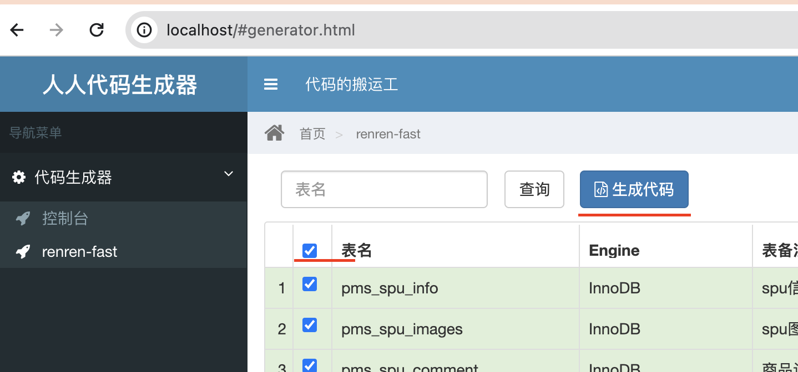 将生成的代码复制到项目中，如图：
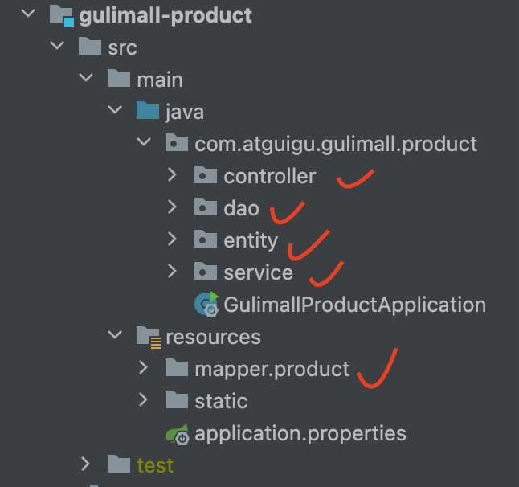创建common模块，把一些公共依赖和工具类放入这个模块
父工程的pom文件：
<module>gulimall-common</module>common模块：为了方便直接把老师的common内容粘贴过来。以下为common的pom文件
<?xml version="1.0" encoding="UTF-8"?> <project xmlns="http://maven.apache.org/POM/4.0.0" xmlns:xsi="http://www.w3.org/2001/XMLSchema-instance" xsi:schemaLocation="http://maven.apache.org/POM/4.0.0 https://maven.apache.org/xsd/maven-4.0.0.xsd"> <modelVersion>4.0.0</modelVersion> <groupId>com.atguigu.gulimall</groupId> <artifactId>gulimall-common</artifactId> <version>0.0.1-SNAPSHOT</version> <name>gulimall-common</name> <description>gulimall-common</description> <properties> <java.version>1.8</java.version> <project.build.sourceEncoding>UTF-8</project.build.sourceEncoding> <project.reporting.outputEncoding>UTF-8</project.reporting.outputEncoding> <spring-boot.version>2.6.13</spring-boot.version> </properties> <dependencies> <!-- mybatis-plus--> <dependency> <groupId>com.baomidou</groupId> <artifactId>mybatis-plus-boot-starter</artifactId> <version>3.2.0</version> </dependency> <dependency> <groupId>org.projectlombok</groupId> <artifactId>lombok</artifactId> <version>1.18.8</version> </dependency> <!-- https://mvnrepository.com/artifact/org.apache.httpcomponents/httpcore --> <dependency> <groupId>org.apache.httpcomponents</groupId> <artifactId>httpcore</artifactId> <version>4.4.12</version> </dependency> <dependency> <groupId>commons-lang</groupId> <artifactId>commons-lang</artifactId> <version>2.6</version> </dependency> <!-- 导入mysql驱动 --> <!-- https://mvnrepository.com/artifact/mysql/mysql-connector-java --> <dependency> <groupId>mysql</groupId> <artifactId>mysql-connector-java</artifactId> <version>8.0.17</version> </dependency> <dependency> <groupId>javax.servlet</groupId> <artifactId>servlet-api</artifactId> <version>2.5</version> <scope>provided</scope> </dependency> <!-- 服务注册/发现--> <dependency> <groupId>com.alibaba.cloud</groupId> <artifactId>spring-cloud-starter-alibaba-nacos-discovery</artifactId> <version>2.2.0.RELEASE</version> </dependency> <!-- 配置中心来做配置管理--> <dependency> <groupId>com.alibaba.cloud</groupId> <artifactId>spring-cloud-starter-alibaba-nacos-config</artifactId> <version>2.2.5.RELEASE</version> </dependency> <dependency> <groupId>javax.validation</groupId> <artifactId>validation-api</artifactId> <version>2.0.1.Final</version> </dependency> </dependencies> <dependencyManagement> <dependencies> <dependency> <groupId>org.springframework.boot</groupId> <artifactId>spring-boot-dependencies</artifactId> <version>${spring-boot.version}</version> <type>pom</type> <scope>import</scope> </dependency> </dependencies> </dependencyManagement> <build> <plugins> <plugin> <groupId>org.apache.maven.plugins</groupId> <artifactId>maven-compiler-plugin</artifactId> <version>3.8.1</version> <configuration> <source>1.8</source> <target>1.8</target> <encoding>UTF-8</encoding> </configuration> </plugin> <plugin> <groupId>org.springframework.boot</groupId> <artifactId>spring-boot-maven-plugin</artifactId> <version>${spring-boot.version}</version> <configuration> <mainClass>com.atguigu.gulimall.common.GulimallCommonApplication</mainClass> <skip>true</skip> </configuration> <executions> <execution> <id>repackage</id> <goals> <goal>repackage</goal> </goals> </execution> </executions> </plugin> </plugins> </build> </project>子工程引入common模块
<dependency> <groupId>com.atguigu.gulimall</groupId> <artifactId>gulimall-common</artifactId> <version>0.0.1-SNAPSHOT</version> </dependency>
整合MyBatis-Plus
导入依赖
<!-- mybatis-plus--> <dependency> <groupId>com.baomidou</groupId> <artifactId>mybatis-plus-boot-starter</artifactId> <version>3.2.0</version> </dependency>配置
配置数据源
导入数据库的驱动：数据库的驱动要找对应的版本。项目使用的版本是
5.7。具体信息可以去maven仓库找。具体mysql驱动适配哪个版本可以去mysql的官方文档找。<!-- 导入mysql驱动 --> <!-- https://mvnrepository.com/artifact/mysql/mysql-connector-java --> <dependency> <groupId>mysql</groupId> <artifactId>mysql-connector-java</artifactId> <version>8.0.17</version> </dependency>创建application.yml文件，配置数据源相关东西
spring: datasource: username: root password: root url: jdbc:mysql://xxxx:3306/gulimall_pms driver-class-name: com.mysql.jdbc.Driver
配置Mybatis-Plus相关信息
添加
@MapperScan注解，指明mapper接口的位置@MapperScan("com.atguigu.gulimall.product.dao") @SpringBootApplication public class GulimallProductApplication { public static void main(String[] args) { SpringApplication.run(GulimallProductApplication.class, args); } }告诉mybatis-plus映射文件的位置
mybatis-plus: mapper-locations: classpath:/mapper/**/*.xml global-config: db-config: id-type: auto # 设置主键自增[!IMPORTANT]
配置文件的绝对路径为：src/main/resources/application.yml
mapper映射文件的路径：src/main/resources/mapper/product/xxxxDao.xml
相对路径是相对于当前工作目录的路径。它不包含从文件系统的根目录到目标文件或目录的所有信息，而是从当前工作目录开始。
./指当前目录路径../表示上一层目录的路径*：代表一个文件名或目录名。它不会跨越目录级别。例如，在路径dir/*.txt中，*会匹配dir目录下的所有.txt文件，但不会匹配子目录中的文件。**：代表零个或多个目录。它可以跨越多个目录级别。例如，在路径/mapper/**/*.xml中，**会匹配/mapper/目录下的所有.xml文件，以及/mapper/的所有子目录中的.xml文件。
所有实体类中都有一个
@TableId注解，用来设置id属性public enum IdType { AUTO(0), NONE(1), INPUT(2), ID_WORKER(3), UUID(4), ID_WORKER_STR(5); private final int key; private IdType(int key) { this.key = key; } public int getKey() { return this.key; } }有以上属性。为了不去一个一个配置，可以在配置文件里统一配置主键自增
测试类
@Test public void contextLoads() { BrandEntity brandEntity = new BrandEntity(); brandEntity.setBrandId(1L); brandEntity.setDescript("华为"); brandService.save(brandEntity); // // brandEntity.setName("华为"); // brandService.save(brandEntity); // System.out.println("保存成功...."); // brandService.updateById(brandEntity); // List<BrandEntity> list = brandService.list(new QueryWrapper<BrandEntity>().eq("brand_id", 1L)); // list.forEach((item) -> { // System.out.println(item); // }); }
配置端口
配置端口，如下
server: port: 7000
转载请注明来源，欢迎对文章中的引用来源进行考证，欢迎指出任何有错误或不够清晰的表达。可以在下面评论区评论，也可以邮件至 1909773034@qq.com